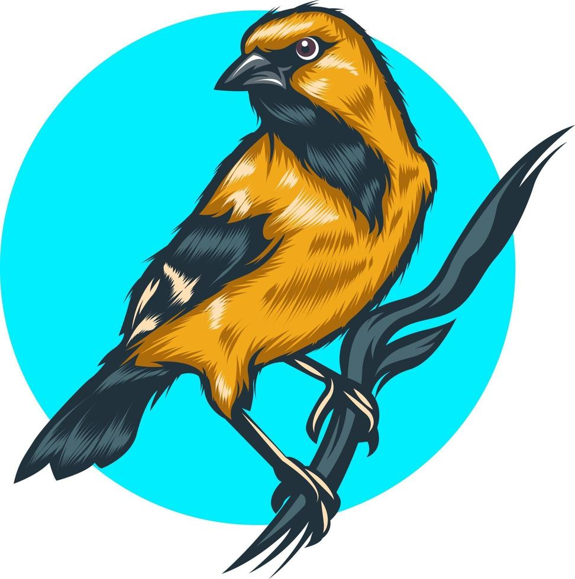
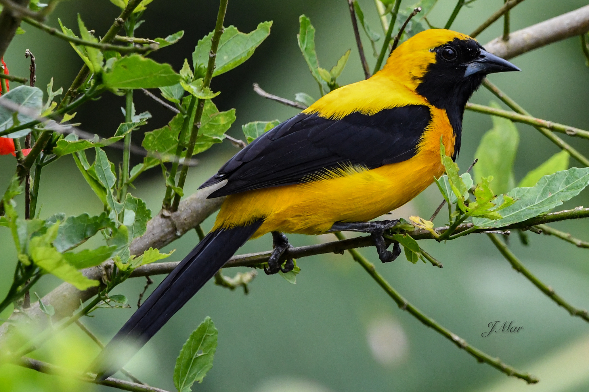
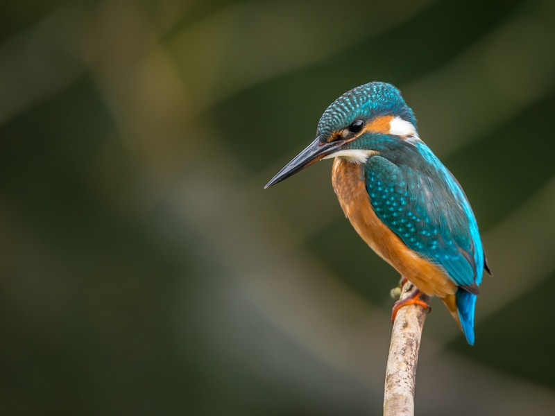
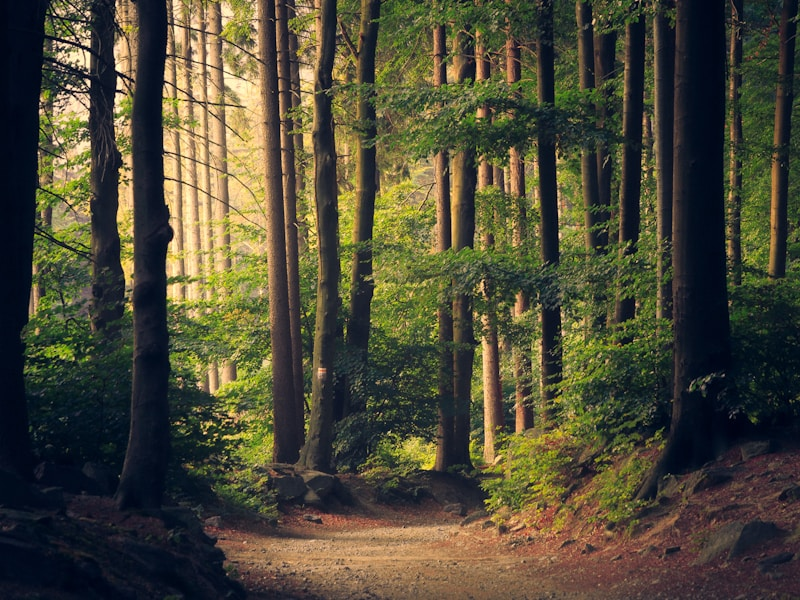

Descubre el mundo de las aves silvestres en Norte de Santander
Experiencias de aviturismo sostenible, guiadas por expertos apasionados por la conservación y la aventura.

Conectar a exploradores de la naturaleza con las aves más fascinantes de Norte de Santander, mientras protegemos sus hábitats y apoyamos a las comunidades locales. Cada tour es una oportunidad para descubrir historias aladas, aprender sobre conservación ambiental y vivir momentos que transforman perspectivas.
¡Tu próxima aventura tiene alas! Cada ave que observas es una historia de biodiversidad, resiliencia y belleza natural esperando ser descubierta.
Cuidamos el hábitat aviario con la menor afectación posible, logrando beneficios compartidos entre naturaleza y experiencias de nuestros clientes.
Equipos especializados, tecnología vanguardista y guías expertos garantizan satisfacción, seguridad y protección ambiental en cada recorrido.
Alianzas con corporaciones ambientales nos permiten ofrecer experiencias innovadoras, descubriendo nuevas aves y sus ecosistemas únicos.
Pioneros en aviturismo especializado en turismo en Norte de Santander, buscamos constantemente innovación y momentos únicos e irrepetibles.
Icterus Chrysater
El símbolo de Cúcuta y de nuestro compromiso ambiental. Esta ave emblemática inspira nuestro nombre y espíritu aventurero.
Su plumaje vibrante combina colores que reflejan nuestros valores: energía, naturaleza y belleza auténtica. Cada avistamiento del turpial es un recordatorio de la importancia de proteger la biodiversidad local.

¡Hola, explorador de la naturaleza! Te invitamos a una aventura inolvidable en el corazón de Norte de Santander.
Con Tourpial Birding, no solo observarás aves; vivirás una experiencia transformadora. Conecta con la esencia de la naturaleza, sumérgete en la rica biodiversidad de nuestra región y sé parte activa de la conservación.
Ornitólogos y guías locales apasionados que comparten conocimiento profundo sobre especies, comportamiento y conservación.
Aplicaciones de observación que enriquecen tu experiencia, registran avistamientos y conectan con comunidades globales de aviturismo.
Protocolos ambientales rigurosos que garantizan tu bienestar y el del hábitat. Cada decisión respeta la naturaleza.
Acceso a las zonas más ricas en especies de Norte de Santander, muchas endémicas de la región y difíciles de observar en otros lugares.
Contribuimos al desarrollo de comunidades locales y empleamos guías expertos de la región.

Vive el asombro de avistar especies raras y endémicas del Norte de Santander con expertos que comparten historias fascinantes sobre cada ave.
Observa el canto, el color y el movimiento de las aves mientras desconectas del ruido urbano y reconectas con la naturaleza.

Comprende ecosistemas aviarios, técnicas de observación y la importancia crítica de la conservación a través de experiencias memorables.
Estamos preparando experiencias únicas de avistamiento de aves en los mejores senderos de Norte de Santander. Pronto podrás reservar tu aventura con nosotros.
Cada ave tiene una historia esperando ser descubierta. Con Tourpial Birding, vives experiencias auténticas y sostenibles que transforman perspectivas sobre la naturaleza y tu rol en su conservación.
Nos ubicamos en el departamento de Norte de Santander, donde la biodiversidad y la aventura se encuentran. Conecta con nosotros y sé parte de un movimiento de turismo responsable que protege el futuro de las aves silvestres.
Estamos aquí para responder todas tus preguntas y ayudarte a planificar tu experiencia de avistamiento de aves.
Norte de Santander, Colombia